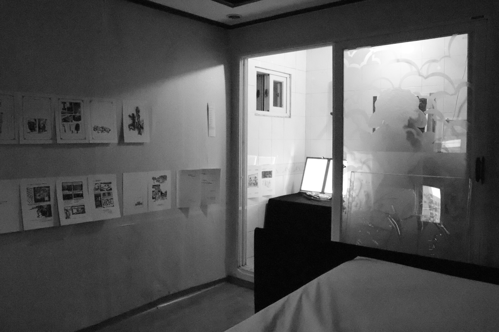
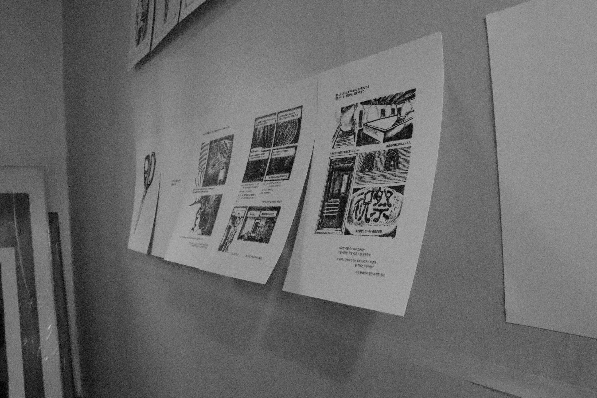
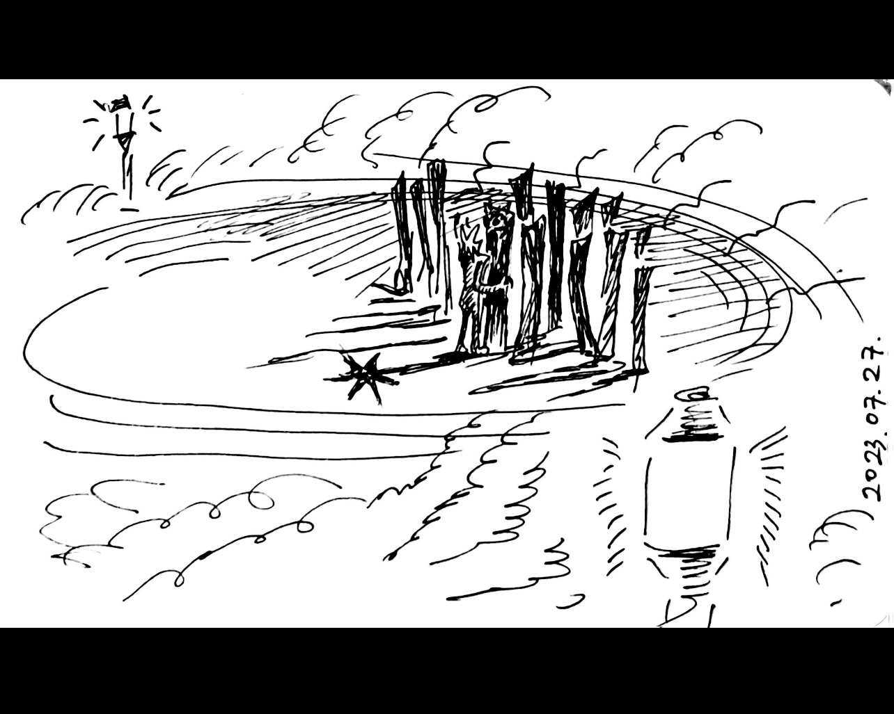
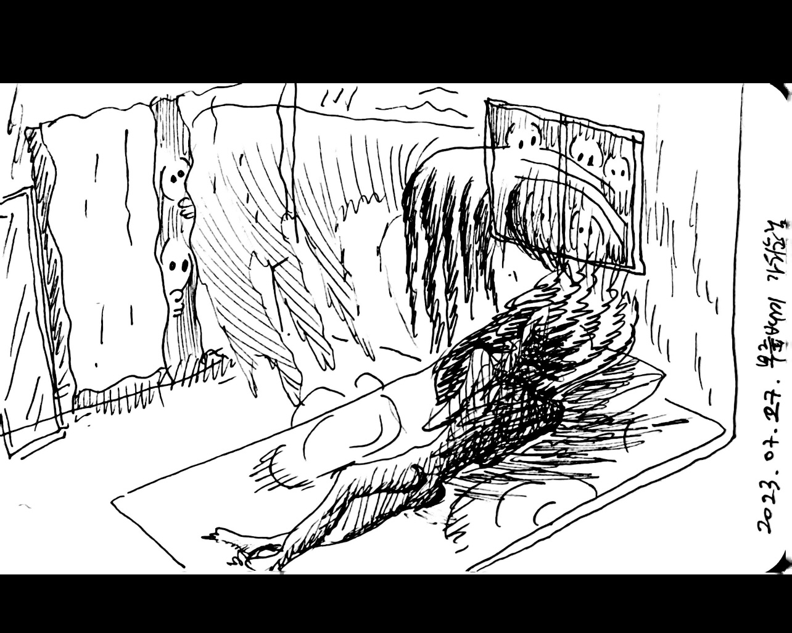
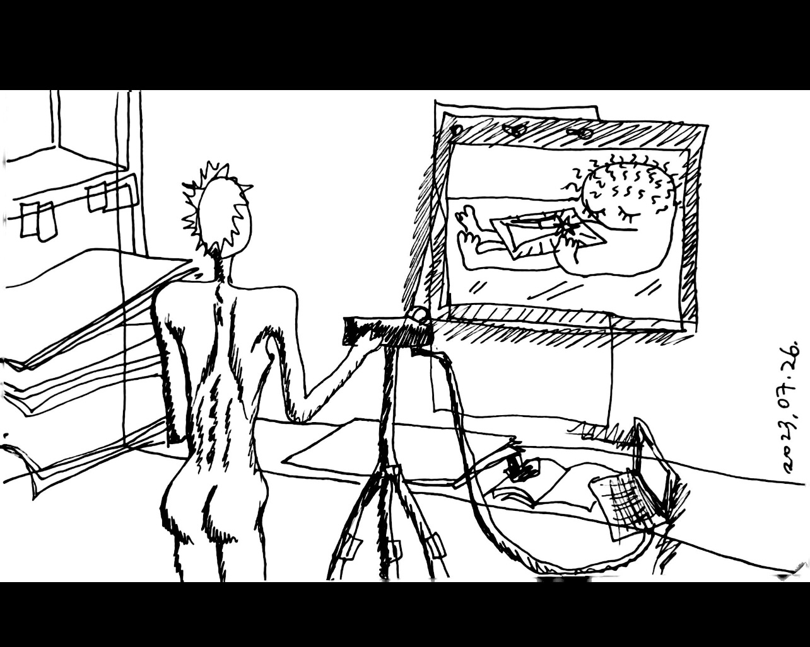
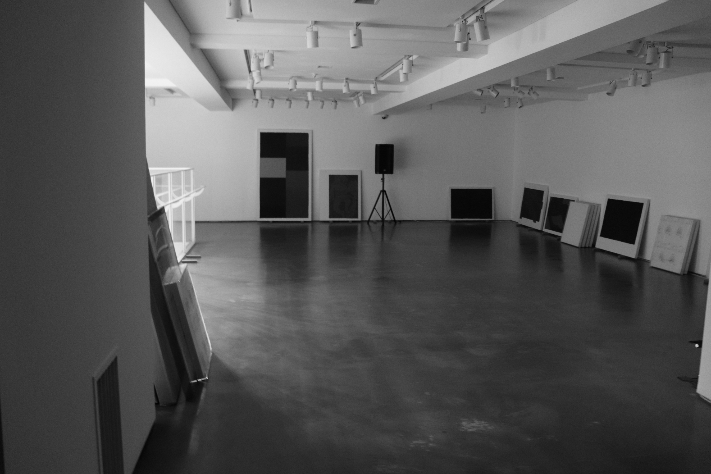
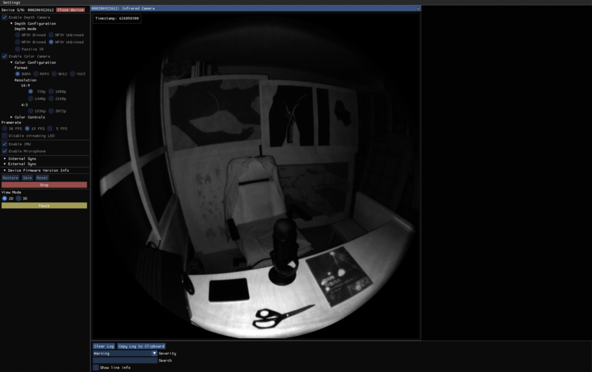
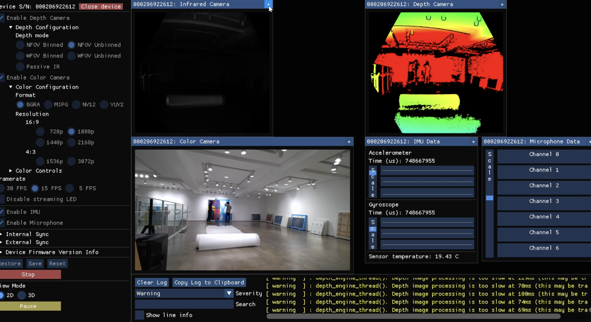

꽃다발은 아직 KKOCH-DA-BAL is still there (2024)
법의학 책을 컷만화 형식으로 옮겨 그린 펜드로잉 시리즈입니다. 상업화랑에서 열린 차연서 개인전 《꽃다발은 아직》에서 나무벽에 스탠못으로 15페이지를 전시했습니다. 또한 같은 층에 해당 시리즈의 초기 드로잉 중 3페이지를 전시했습니다. 첫날 방문한 관객에게는 원하는 페이지 넘버와 주소, 성함을 적어 신청서를 작성하면 어느 날 재난처럼 우편으로 사본을 받아볼 수 있는 게릴라 오프닝 이벤트를 열었습니다.
There are pen drawing series that transcribes forensic science books into cut cartoon format. There are exhibited as new works for Cha Yeonså's solo show 《KKOCH-DA-BAL is still there》. There was a guerrilla opening event where you could write down the page number, address, and name you want, and get a copy by mail one day like a disaster, limited to the audience who visited on the first day.
 
モーテルでフェスティバル(모텔에서 축제) Festival in motel (2023)
W/O F. 가 주최한 단체전 《모텔전: 눈 뜨고 꾸는 꿈》에 참여했습니다. 흑백만화 원고는 2024년도에 출간 예정인 팀 우프의 세번째 잡지, Without Frame! Vol.3 에 게재됩니다.
Participated in Group Show 《The Motel : Because I want to live there》 hosted by team W/O F. B&W comics pages will be published on 'Without Frame! Vol.3', the third magazine of team W O/F.



  
이 기막힌 잠 This Unbelievable Sleep (2023)
차연서 개인전 "이 기막힌 잠"에 축제 (한국화가 차동하 협력)와 모스키토라바쥬스; 흑백사진 아카이브 (사진가 홍지영 협업)를 제작했으며, 게릴라웹전시에서 일부 흑백이미지만 공개되었습니다.
There are new works for Cha Yeonså's solo show "This Unbelievable Sleep", which titles are Mosquitolarvajuice; Live Performance Game Archive and Festival. Because of the sudden cancellation of the offline exhibition, they are released as partial images in the guerrilla web-exhibition.